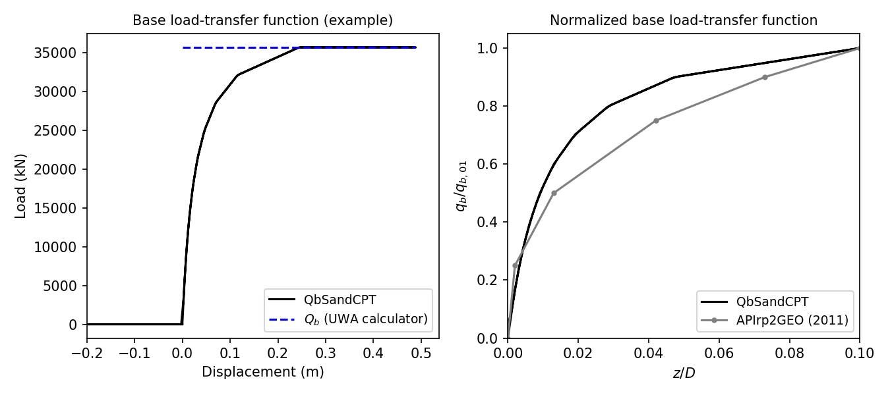

QbSandCPT
The QbSandCPT function implements the shaft-load transfer function, commonly referred to as the q-z curve or spring. The required inputs to construct this material are as follows:
uniaxialMaterial('QbSandCPT', matTag, qp, D, t, dcpt):
"""
Constructs a QbSandCPT uniaxial material object.
Args:
matTag (int): Integer tag identifying material.
qp (float): End bearing mobilised at large displacements.
D (float): Pile outer diameter.
t (float): Pile wall thickness.
dcpt (float): Diameter of the standard CPT probe (see note).
Returns:
uniaxialMaterial: QbSandCPT material object.
Note:
- The nominal value of the diameter of the standard CPT probe is 35.7mm.
"""
1. Description
The QbSandCPT function implements the base-load transfer function, commonly referred to as the \( q_z \) curve or spring, according to the new Unified CPT-based method for driven piles in sands. The non-linear end bearing-displacement response obeys the hyperbolic function as defined by [1]. Unit end bearing, \( \mathrm{q}_{\mathrm{b}} \), is assumed to be fully mobilized at a pile base displacement value of 0.1D in APIrp2GEO standard (2011). This criterion was also maintained in the unified method. The proposed expression to represent the variation of pile base load with base displacement follows a hyperbolic function of the form:
with \( z_{\mathrm{b}} \) as the pile base displacement and \( \mathrm{q}_{\mathrm{b}0.1} \),
1.1. End bearing capacity
The material calculates the base or end bearing capacity according to the formulation given in [2]. The expression for the base capacity is given in the equation below.
where \( \mathrm{q}_{\mathrm{b}0.1} \) is the ultimate unit base resistance mobilized at a settlement of 10% of the pile diameter.
The parameter \( \mathrm{q}_{\mathrm{p}} \) represents the mobilized end bearing at large displacements by a pile at the level of the pile base by a pile with a fictitious diameter of \( D_{eq} = A_{\mathrm{re}}^{0.5} \). Several techniques can be employed to estimate \( \mathrm{q}_{\mathrm{p}} \). In sands that are relatively homogeneous, one can consider \( \mathrm{q}_{\mathrm{p}} \) to be the average value of cone resistance within a zone 1.5D above and below the pile base. In more heterogeneous locations, the approaches discussed in [2] may be employed.
2. Material behaviour
The input data assumed is based on a typical sand site in the Gulf of Mexico. The simulated end bearing behavior for this example is shown in the following figure. As expected, for tension loading there is no end bearing.

The simulated end-bearing response by the material is shown in the left plot. Users can verify that the internally computed ultimate unit base resistance mobilized at a settlement of 10% of the pile diameter (\( q_{b0.1} \)) is 7.629MN, which corresponds to the value computed using the UWA calculator.
The right plot compares the normalized form of the simulated QbSandCPT response against the load-transfer curve recommended in API (2011). This comparison leads to the same conclusions in [1]. The proposed back-bone curve matches relatively well the API (2011) recommendations for \( q_{b}/q_{b0.1} \) ratios lower than 0.4. For greater ratios, the unified CPT-based end bearing curve is stiffer than API formulas.
3. How to use
The following constructs a QbSandCPT material with a tag of 1, \( q_p \) of 50000 kPa, \( D \) of 2.44 m, \( t \) of 0.0445 m, and \( d_{CPT} \) of 35.7 mm.
References
[1] Lehane, B. M., Li, L., & Bittar, E. J. (2020). Cone penetration test-based load-transfer formulations for driven piles in sand. Geotechnique Letters , 10 (4), 568-574.
[2] Lehane, B. M., Liu, Z., Bittar, E., Nadim, F., Lacasse, S., Jardine, R., ... & Gavin, K. (2020). A new'unified'CPT-based axial pile capacity design method for driven piles in sand. In 4th International Symposium on Frontiers in Offshore Geotechnics (postponed) (pp. 462-477).